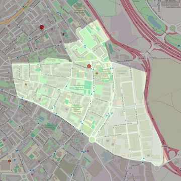

Santa María de la Alegría
- Arciprestazgo
- Móstoles
- Población
- Móstoles
- Dirección postal
- c/ Carlos V, 2
- Código postal
- 28936
- Extensión
- 1,14 km² (114 ha)
- Teléfono
- 912 268 720
- Correo electrónico
- santamariadelaalegria@gmail.com


Descargar mapaLímites según decreto
" Partiendo de la confluencia de la carretera de Fuenlabrada (calle Simón Hernández) con la calle de Las Palmas, siguen por el eje de esta última hasta su encuentro con la calle del Camino de Leganés; continúan por la calle del Camino de Leganés (incluyendo la doble numeración) hasta la calle de la Libertad; siguen por el eje de la calle de la Libertad hasta la Avenida de Barcelona; siguen por el eje de la Avenida de Barcelona y, atravesando la Avenida de la ONU, continúan por el eje de la calle Burdeos, y de aquí en línea imaginaria hasta el término municipal de Alcorcón, siguen por el término municipal de Alcorcón y Fuenlabrada hasta su encuentro con la carretera de Fuenlabrada, por la que continúan en dirección Norte hasta su confluencia con la calle de Las Palmas, punto de partida". (Decreto de rectificación de límites de 12-9-84)